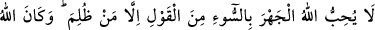
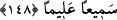

hikmetinin gereğidir.
Cenâb-ı Hak ateşi, kulları zâtının celâl ve kibriyâsını bilsinler, azâmet ve heybetini
yüreklerinde hissetsinler, O’ndan korksunlar, O’na yakışır bir terbiye ile edeblensinler
diye yaratmıştır. Allah’ın kullarına gönderdiği peygamberlerin terbiyesiyle
edeblenmeyenler onunla terbiye olsunlar, akıl sâhipleri dünyâda akıllarını başlarına
alıp ibret alsınlar diye yaratmıştır. İşte bu sebeptendir ki Hz. Peygamber (a.s) kamçıyı
ev halkı edebi terketmesinler diye onların görebileceği bir yere asmıştır. (Keşfü’l-Hafa
c. 2 s. 82)
Rivâyet edilir ki Allah Teâlâ Mûsâ (a.s.)’a şöyle buyurmuştur: “Cehennemi
cimriliğimden (boş bırakmak için) yaratmadım. Fakat düşmanlarımla dostlarımı
(velîlerimi) bir yerde toplamayı kerih görüyorum.”
Allah bâzı isyankar mü’minleri, cennetin kıymetini ve onlardan uzaklaştırılan büyük
cezânın miktarını bilsinler diye cehenneme sokacaktır. Çünkü, nimete saygı göstermek,
hikmetin gereğidir.
Allah Teâlâ mü’min kullarına geçmiş ve gelecek nimetlerini hatırlatıyor. Onları
yokluktan çıkarıp benzersiz bir sûretle ve öncelikle onların ruhlarını yaratması,
cesetleri karanlık (zulmânî) olduğu halde ruhlarını nûrânî olarak yaratması, kıdem
nûrundan onların üzerine saçması, ezelde ruhlar üzerine saçılan kıdem nûru, kâfir ve
münâfıkların ruhlarına isâbet etmediği halde mü’minlerin ruhlarına isâbet etmesi bu
nîmetlerdendir.
“Eğer siz” şükreder ve îman ederseniz, Allah size neden azap etsin.” çalışarak hak
etmediğiniz halde bu nîmetleri size verene “şükreder,” bu nimetlerin farkında olur ve
onları bahşedeni görerek şükrederseniz “ve îman ederseniz” Bana inanmış olursunuz ve
azâbımdan, yâni Ben’den ayrı kalma eleminden kurtulursunuz. Çünkü şükrün hakîkati,
nîmetin sâhibini görmektir. Nimeti verene şükretmek nimete şükretmekten daha
üstündür. Nitekim âyette:
“Bana şükredin.” (Bakara, 2/152) yâni Benim varlığıma şükredin buyurulmuştur.
“Allah”, ezelde kendi vücuduna “şükredendir.” Kendi varlığına şükreden, sonsuz
cömertliği ile mahlûkatı yaratmıştır.
Allah kimin kendisine şükrettiğini ve kimin nankörlük içinde olduğunu “bilendir.”
Kendisine şükredenlerin mükâfâtlarını, onların şükründen önce verir. Çünkü Allah
şükrün karşılığını verendir. Kâfire de küfrünün cezâsını, küfründen önce verir. Çünkü
kâfir, aslında nankördür. Bu kısım, “et-Te’vîlâtü’n-Necmiyye”den alınmıştır.
148- Allah kötü sözün açıkça söylenmesini sevmez; ancak haksızlığa uğrayan